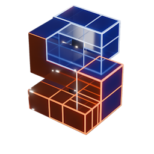
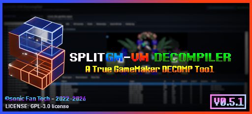

A TRUE GameMaker DECOMP Tool.

SplitGM is a C# / WPF Based Tool Built for working with GameMaker data.win Files, it supports GameMaker data Files from GM 1.4 [2015] All the way upto GMS 2 [the present day]
SplitGM can and has:
- open supported GameMaker data archives and Windows executables
- reconstruct readable GML from GameMaker VM bytecode
- display VM assembly beside reconstructed code
- browse and preview resources
- export recoverable assets and metadata
- analyze relationships between code and resources
- export an organized SplitGM extraction project
- run a loaded game from an isolated TEMP copy
- and generate an experimental reconstructed GameMaker `.yyp` project.
- a required animated startup launcher
- five selectable startup-display modes
- automatic UNDERTALE, DELTARUNE, and Generic GameMaker profiles
- a responsive **Run Game from TEMP** workflow
- detailed TEMP-run manifests and logs
- a hidden-by-default experimental reconstructed `.yyp` exporter
- safer room and project linking
- automatic reconstructed-project repair
- validation and quarantine of resources that cannot be represented safely
- UMT-style background scheduling for large exports
- real decoded-audio waveform previews
- and a dedicated read-only UMT-style room viewer
- UndertaleModTool and UndertaleModLib — GPL-3.0
- Underanalyzer — MPL-2.0
- AvalonEdit — MIT
- NAudio — MIT
- NAudio.Vorbis — MIT
- Magick.NET — Apache-2.0

© 2026 sonic Fan Tech - SplitGM: GPL-3.0 license